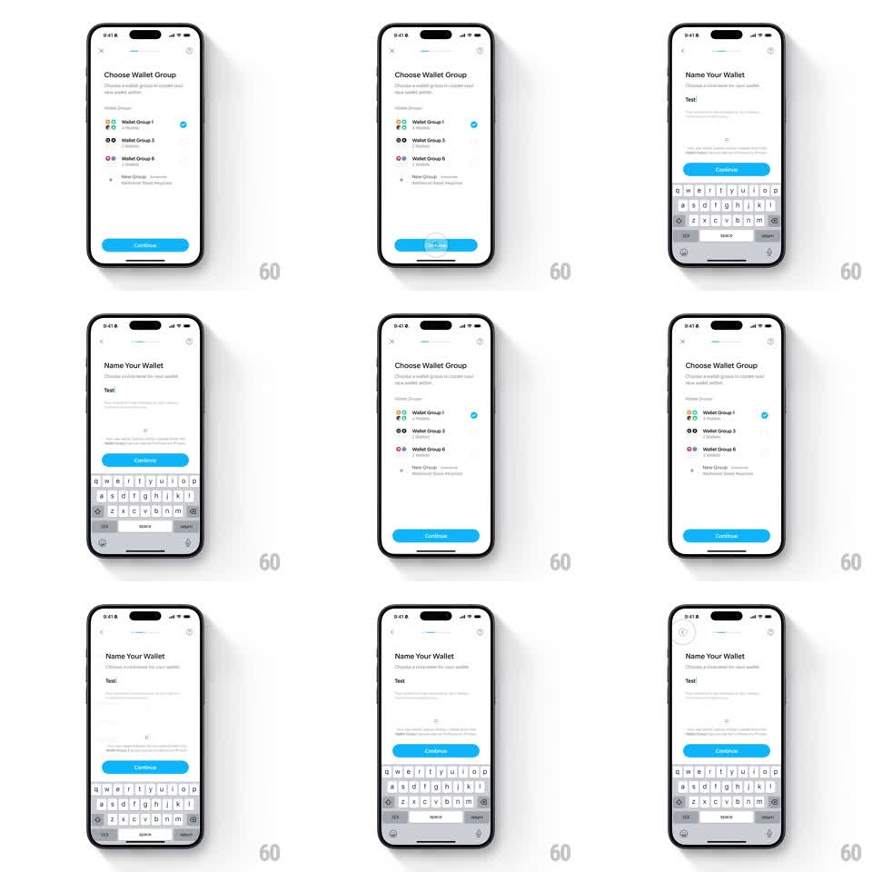

Media
Frame-by-frame

Rebuild this interaction 1:1: Family's nav icon morph - pushing from "Choose Wallet Group" to "Name Your Wallet" morphs the top-left close X into a back chevron, and popping back morphs it into the X again, the two glyphs interpolating as the screens slide.

Rebuild this interaction 1:1: Family's nav icon morph - pushing from "Choose Wallet Group" to "Name Your Wallet" morphs the top-left close X into a back chevron, and popping back morphs it into the X again, the two glyphs interpolating as the screens slide.
## Integration
Integration: stack-agnostic spec - springs given as stiffness/damping, timed motions as duration + curve; map every value to your framework and animation library of choice.
## Scene
Light onboarding screens. Screen 1: "Choose Wallet Group" - X close top-left, group rows (Wallet Group 1/3/6 with avatar clusters, blue radio check), New Group, blue Continue. Screen 2: "Name Your Wallet" - back chevron top-left, "Choose a nickname for your wallet" subhead, text field ("Test"), blue Continue, keyboard up. The top-left icon is a circle-backed glyph on both screens.
## Motion spec
Pattern: close-to-back glyph morph during push/pop.
- Tap Continue: the push begins (screens slide left, 300ms, ease-in-out); the X's two strokes rotate and translate - one stroke shortening into the chevron's upper arm, the other into its lower arm (stroke interpolation, 300ms, synchronized with the slide) - while the circle backing stays constant.
- Mid-transition the glyph passes through a genuine in-between shape (a rotated partial cross), never a crossfade between two icons.
- The new screen's title and field stagger in (50ms apart) as the keyboard rises (250ms).
- Pop back: the chevron's arms extend and rotate back into the X (reverse interpolation, 300ms) as the screens slide right and the keyboard drops (200ms).
## Calibration
- Stroke width (2pt), circle diameter, and color stay identical - only stroke geometry animates.
- The morph finishes exactly when the slide finishes.
## Reduced motion
The glyphs crossfade (150ms) within the static circle.
## Don't miss
- The morph runs on both push and pop - it is fully reversible.
- The circle backing never scales or moves; it anchors the morph.